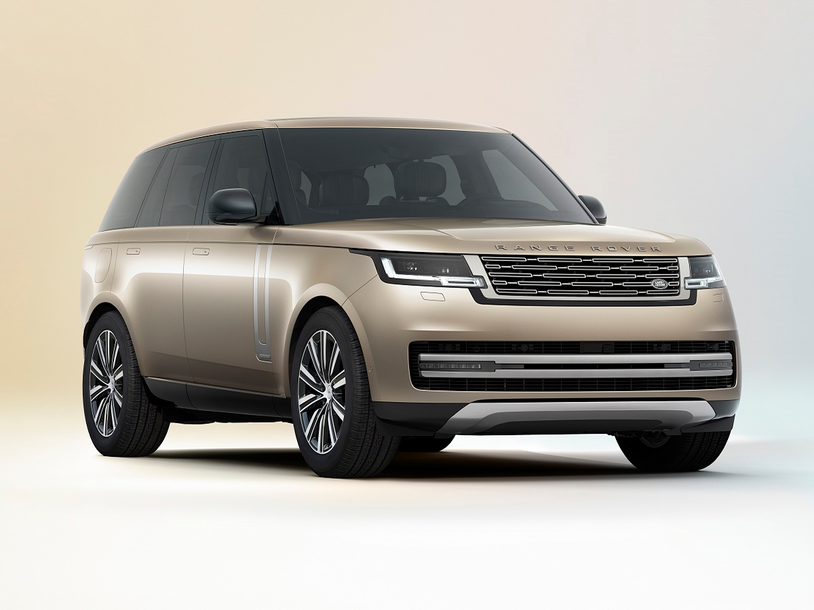

Autobiography Edition
The Range Rover Autobiography Edition is the epitome of luxury and sophistication in the SUV world!
Combining iconic design with cutting-edge technology, it offers an unparalleled driving experience. Inside, it features handcrafted leather upholstery, bespoke finishes, and state-of-the-art amenities, while outside, its refined lines and commanding presence make a bold statement. Equipped with advanced performance capabilities, including powerful engines and adaptive suspension, the Autobiography delivers exceptional comfort and control, whether cruising through city streets or exploring rugged terrain. This flagship model elevates the art of luxury travel, where every detail is tailored for the discerning driver.
Rent More infoFor the true Range Rover's Fan

The rear of the Range Rover Autobiography Edition is a perfect blend of elegance and strength. With sleek, sculpted lines, LED taillights, and polished chrome accents, it exudes sophistication. The distinctive Autobiography badging and wide stance create a commanding presence, making a bold statement on the road.
The interior of the Range Rover Autobiography Edition blends luxury and technology, with handcrafted leather, rich wood accents, and advanced features like heated/cooled seats and a premium Meridian sound system. Every detail is designed for ultimate comfort and sophistication.